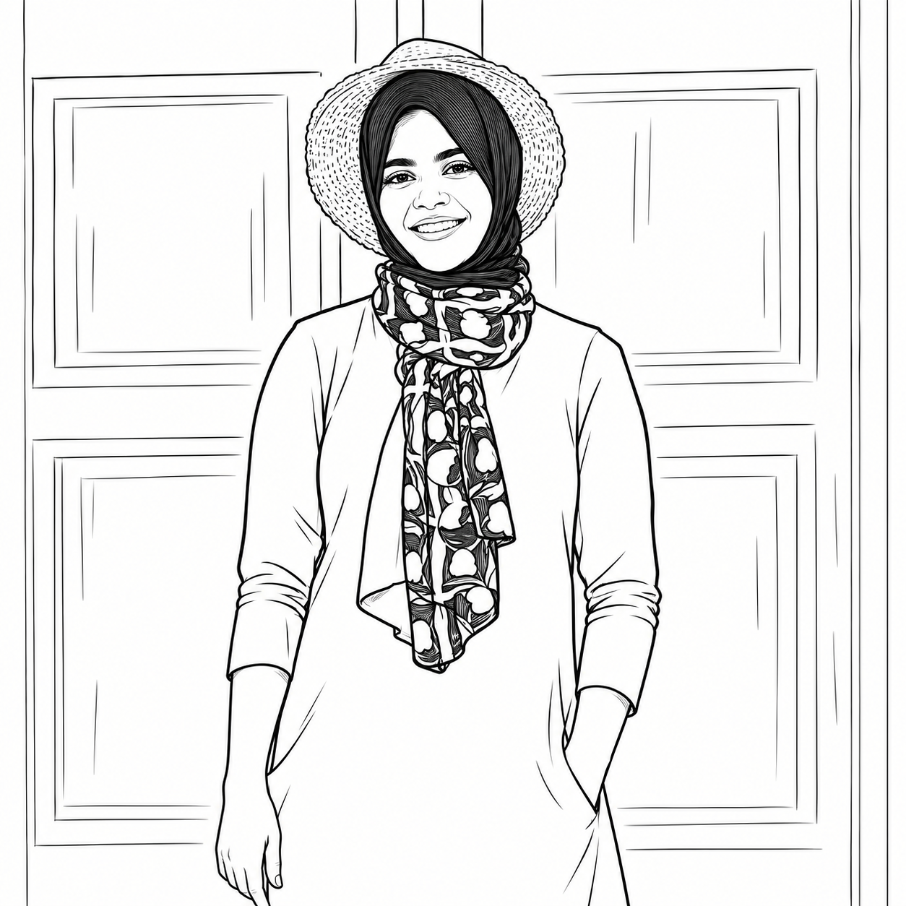
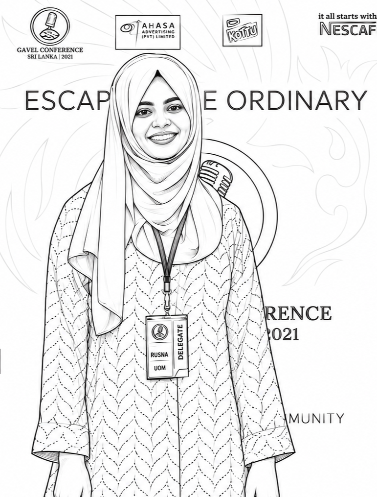
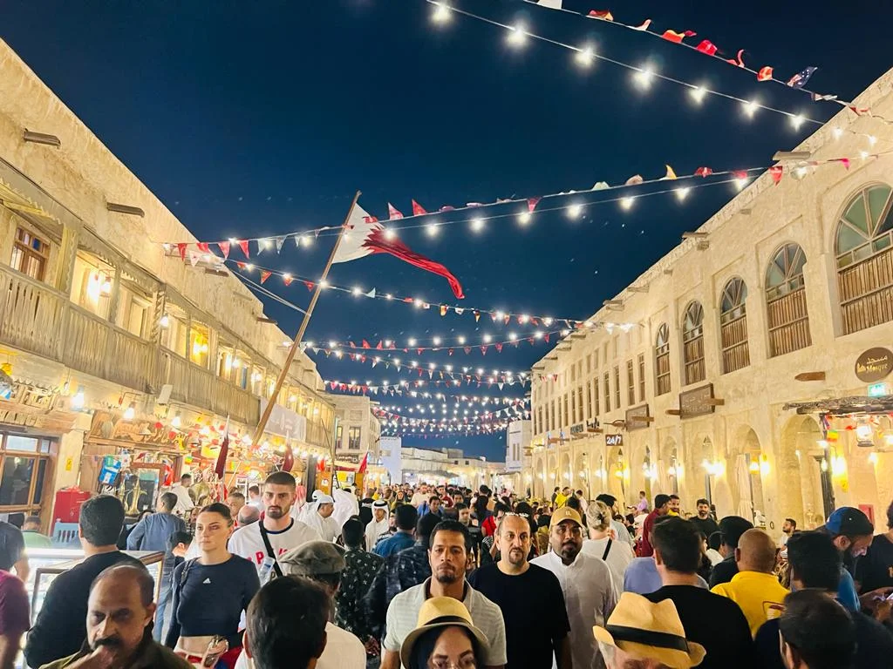
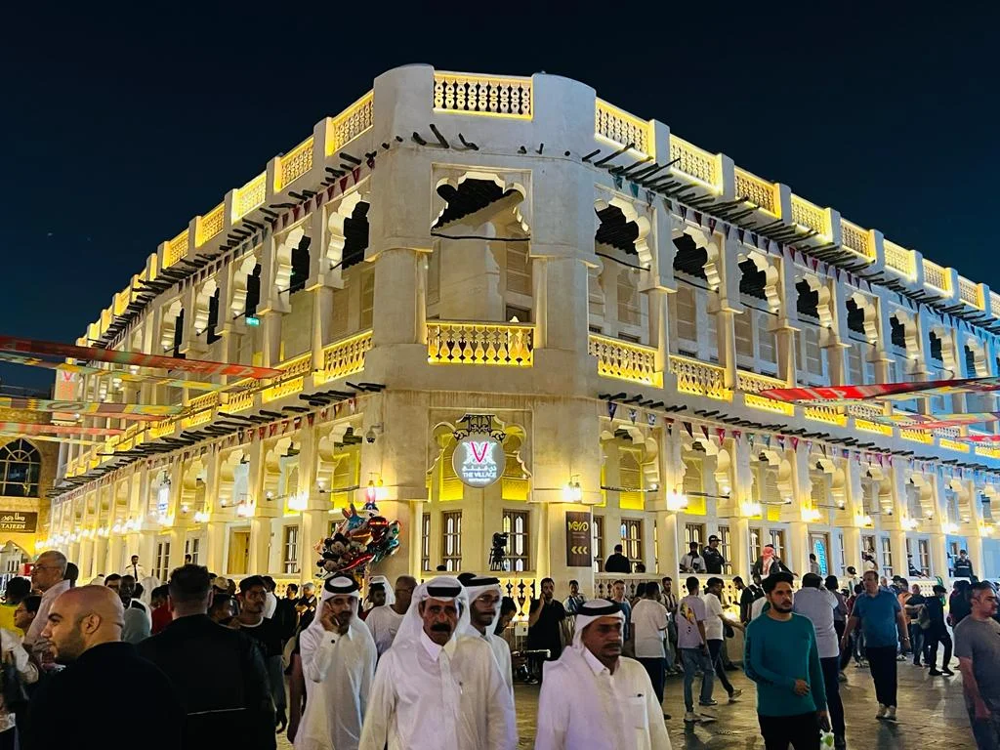
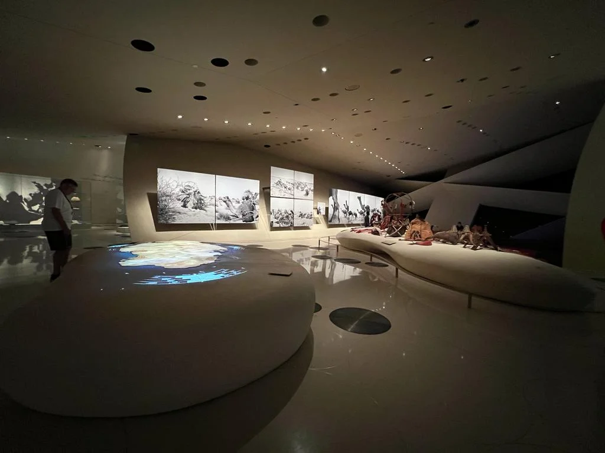
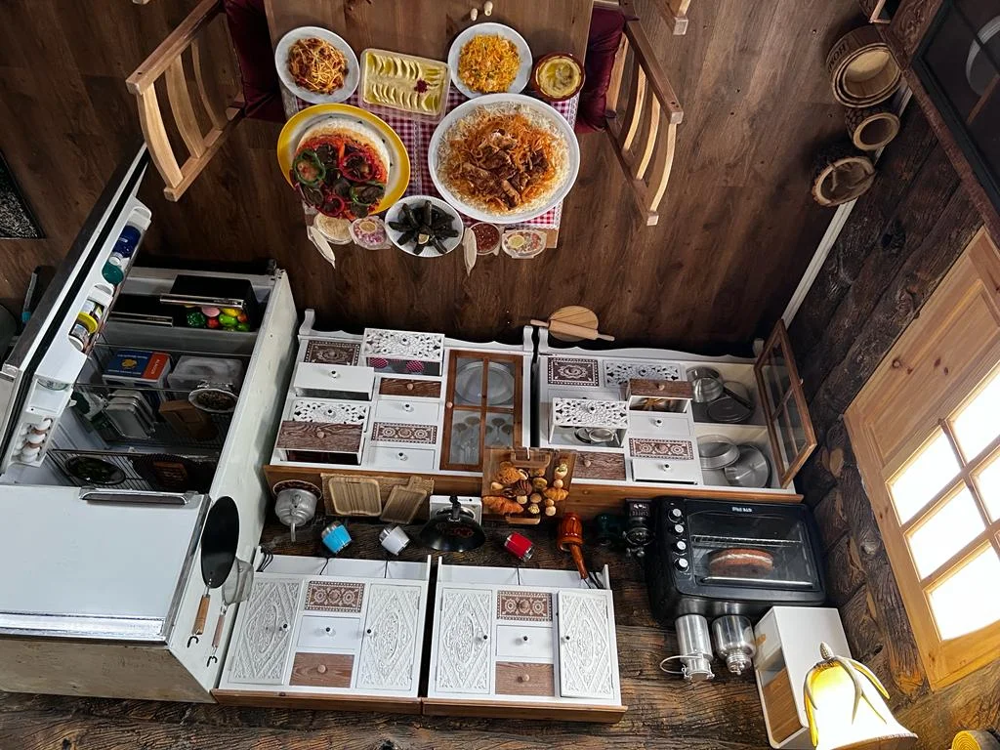
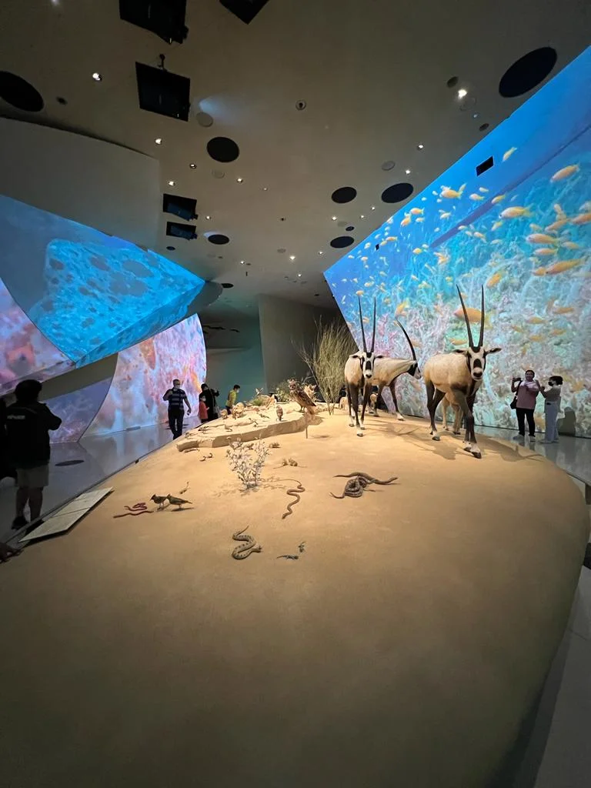
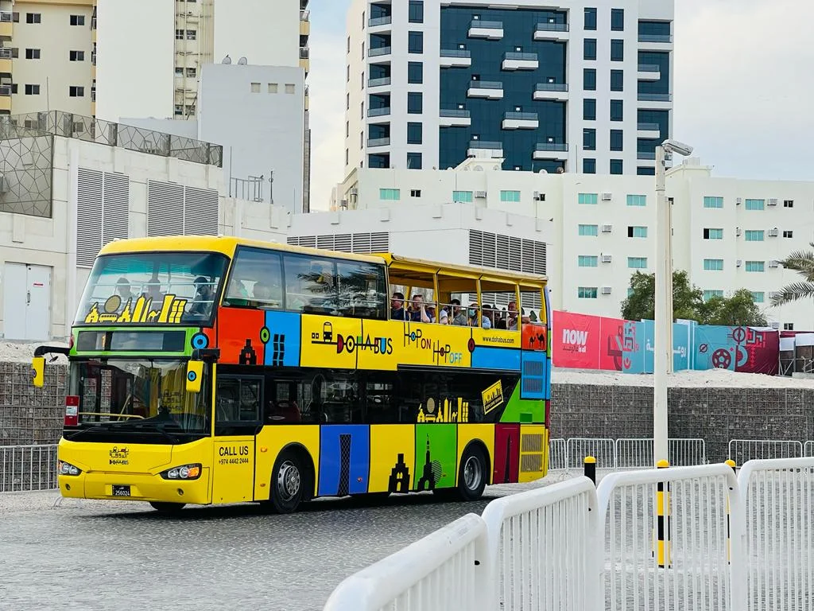

I design with empathy & curiosity
I'm Rusna Fasli, a UX Specialist based in Qatar, with 3+ years of experience across UX strategy, design direction & delivery for government, private & enterprise institutions across Qatar & Kuwait.


A foundation that started with design.
It trained me to observe closely, understand people, question assumptions and approach problems from different perspectives.
Sri Lanka
I'm interested in the space where UX, technology and intelligent systems meet.
I'm continuing to explore how AI can accelerate design workflows without replacing the human thinking behind them — from early exploration and research synthesis to prototyping and product experiences.






Outside the pixels
When I'm not solving UX problems, you'll usually find me exploring visual inspiration, learning something new, or simply observing how people interact with the world around them.